워드프로세서-3급(폐지) (2002-03-10 기출문제)
1과목: 워드프로세서 용어 및 기능
1. 기억장치의 용량 단위가 가장 큰 것부터 적은 것 순서로 바르게 배열된 것은?
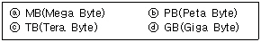
- ⓐ-ⓑ-ⓒ-ⓓ
- ⓐ-ⓒ-ⓑ-ⓓ
- ⓑ-ⓒ-ⓓ-ⓐ
- ⓒ-ⓑ-ⓓ-ⓐ
(정답률: 58%)

2. 다음 중 화면표시 장치의 종류가 아닌 것은?
- FED(Field Emission Display)
- LCD(Liquid Crystal Display)
- PDP(Plasma Display Panel)
- 플로터(Plotter)
(정답률: 75%)
3. 다음의 기억장치들 중에서 저장된 내용을 삭제하거나 수정할 수 없는 것은?
- 하드디스크
- 플래시 롬(Flash ROM)
- CD-ROM
- 집 디스크(Zip Disk)
(정답률: 70%)
4. 다음 중 오려두기나 복사하기 한 내용이 저장되는 곳은?
- 클립아트(Clip Art)
- 클립보드(Clip Board)
- 하드디스크(Hard Disk)
- 스풀 파일(Spool File)
(정답률: 73%)
5. 다음 중 커서의 이동 시 사용되는 키로만 바르게 짝지어진 것은?
- [Insert] - [Pause]
- [Page Down] - [Print Screen]
- [Home] - [Num Lock]
- [End] - [Home]
(정답률: 67%)
6. 다음 중 편집기능이 아닌 것은?
- 수정
- 삽입
- 삭제
- 표시
(정답률: 82%)
7. 화면의 현재 상태를 그대로 인쇄 장치를 통하여 출력하는 기능은?
- 홈 베이스(Home Base)
- 하드 카피(Hard Copy)
- 소프트 카피(Soft Copy)
- 포매터(Formatter)
(정답률: 72%)
8. 다음 중 문서 작성 시 문서를 효과적으로 빠르게 입력하는 기능으로 옳지 않은 것은?
- 래그드(Ragged)
- 매크로(Macro)
- 상용구
- 복사하기, 붙여넣기
(정답률: 59%)
9. 다음 중 “붙이기”와 관련 없는 것은?
- 영역복사와 이동
- 캡션(Caption)
- 버퍼(Buffer)
- [Ctrl]+[V]
(정답률: 71%)
10. 다음 중 편집한 문서를 인쇄하기 전에 화면에 미리 출력시켜 보는 것은?
- 클립보드(Clipboard)
- 위지윅(WYSIWYG)
- 창 나누기(Split Screen)
- 미리보기(Preview)
(정답률: 74%)
11. 다음 중 문자 입력 방법에 대한 설명으로 옳지 않은 것은?
- 영문 입력시 대·소문자의 전환은 [Caps Lock]키를 이용한다.
- 한글 입력은 한글 2벌식이나 한글 3벌식 자판을 이용하여 입력한다.
- [Ctrl]키를 누른 채 영문 키를 누르면 대문자나 소문자를 변경하여 입력할 수 있다.
- 워드프로세서 프로그램마다 문자표를 지원한다.
(정답률: 65%)
12. 다음 중 정렬(Align)에 관련된 용어가 아닌 것은?
- 오른쪽 정렬
- 왼쪽 정렬
- 가운데 정렬
- 크기 정렬
(정답률: 87%)
13. 다음 중 키보드로 입력이 불가능한 문자는?
- ÷
- %
- @
- &
(정답률: 91%)
14. 한/영 키를 잘못 눌러 한글과 영문이 뒤바뀐 상태에서 “djajsl”을 입력하였더니 입력과 동시에 다음과 같이 자동으로 “어머니”로 변경시켜주었다. 이에 해당되는 기능은 무엇인가?
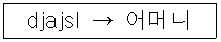
- 한영 자동 전환
- 대/소문자 변경
- 자동요약
- 맞춤법 검사
(정답률: 86%)
15. 문서에 포함된 표 또는 그림의 제목이나 설명을 붙이는 기능은?
- 디폴트(Default)
- 캡션(Caption)
- 옵션(Option)
- 소트(Sort)
(정답률: 70%)
16. 보조기억장치에 기억된 데이터를 주기억장치로 불러오는 것을 무엇이라 하는가?
- 로드(Load)
- 세이브(Save)
- 경로(Path)
- 백업(Backup)
(정답률: 64%)
17. 다음 중 커서(Cursor) 이동키에 관한 내용으로 옳지 않는 것은?
- [Tab] : 여러 칸을 한번에 일정한 간격으로 이동한다.
- [→] : 커서를 오른쪽으로 한 문자씩 삭제하며 이동시킨다.
- [Home], [End] : 커서를 줄의 맨 처음과 끝으로 이동시킨다.
- [Page Up], [Page Down] : 커서를 한 화면 단위로 이동시킨다.
(정답률: 66%)
18. 다음 교정부호에 대한 설명 중 바르게 된 것은?
- : 삽입
- : 들여쓰기
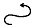
: 줄잇기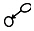
: 교정취소
(정답률: 80%)
19. 다음의 A 문장을 B 문장과 같이 바꾸기 위해서 사용되는 교정부호로 옳은 것은?
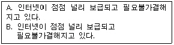
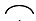
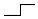
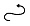
(정답률: 69%)
20. 문서의 상하좌우 여백을 나타내는 용어는?
- 마진(Margin)
- 옵션(Option)
- 머지(Merge)
- 피치(Pitch)
(정답률: 81%)
2과목: PC 운영 체제
21. 다음 중 한글 Windows 98에서 마우스와 함께 사용할 수 있는 키로 옳은 것은?
- [Shift]
- [Enter]
- [Caps Lock]
- [Delete]
(정답률: 71%)
22. 한글 Windows 98의 작업표시줄의 시작단추 위에 마우스를 위치시키고 마우스의 오른쪽 단추를 클릭하여 표시되는 바로가기 메뉴의 항목이 아닌 것은?
- 실행
- 열기
- 탐색
- 찾기
(정답률: 55%)
23. 다음은 한글 Windows 98의 [제어판] 내의 [마우스] 도구에서 기본적으로 설정되어 있는 마우스 포인터 아이콘들이다. 설명이 틀린 것은?
- : 백그라운드에서 작업
- : 사용중
- : 사용할 수 없음
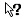
: 도움말 선택
(정답률: 82%)
24. 한글 Windows 98에서 [제어판]의 [디스플레이] 도구를 선택하고 바로가기 메뉴에서 열기를 선택하였다. [디스플레이] 도구에서 설정 가능한 항목이 아닌 것은?
- Windows 바탕 화면의 배경무늬 설정
- 화면 보호기 설정
- 화면 배색 설정
- 동화상 디스플레이 실행
(정답률: 61%)
25. 한글 Windows 98에서 파일을 현재 폴더에서 다른 폴더로 이동시키려고 한다. 다음 중에서 가장 관련이 없는 작업은?
- 파일 선택하기
- 잘라내기
- 복사
- 붙여넣기
(정답률: 49%)
26. 한글 Windows 98에서 특정 파일이나 폴더의 이름을 바꾸는 방법으로 가장 적절하지 않은 것은?
- 파일이나 폴더를 선택한 후 [F2]키를 누른다.
- 파일이나 폴더를 선택한 후 한번 더 클릭한다.
- 파일이나 폴더를 삭제하고 새로운 이름으로 다시 만든다.
- 바로가기 메뉴에서 이름 바꾸기를 선택한다.
(정답률: 65%)
27. 한글 Windows 98에서 파일을 인쇄할 때 인쇄할 내용을 하드디스크에 일시적으로 보관하여 출력함으로서 컴퓨터가 인쇄 중에도 다른 작업을 수행할 수 있도록 하는 기능을 무엇이라고 하나?
- 스풀 기능
- 스캔 디스크 기능
- 플러그 앤 플레이
- 병렬 인쇄 기능
(정답률: 51%)
28. 한글 Windows 98 시작메뉴의 [설정]-[제어판]-[마우스]를 선택하여 마우스 등록정보 창에서 설정할 수 없는 것은?
- 왼손잡이를 위한 마우스 단추 설정을 할 수 있다.
- 마우스 포인터의 모양을 변경할 수 있다.
- 마우스 포인터의 동작 속도를 변경할 수 있다.
- 마우스를 연결하는 포트를 바꿀 수 있다.
(정답률: 60%)
29. 한글 Windows 98에서 폴더창의 제목표시줄 버튼중에서 [Alt] + [F4]키와 같은 기능을 하는 버튼은 어느 것인가?
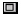
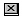
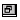
(정답률: 79%)
30. 한글 Windows 98의 탐색기에 폴더의 내용을 웹 페이지 형식으로 보고자 할 때 사용하는 메뉴는?
- [파일]
- [편집]
- [도구]
- [보기]
(정답률: 65%)
31. 한글 Windows 98에서 도움말을 사용하기 위한 단축키는?
- [F1]
- [F2]
- [F3]
- [F4]
(정답률: 79%)
32. 한글 Windows 98 운영체제를 새로이 설치했을 때 바탕화면에 기본적으로 표시되는 아이콘이 아닌 것은?
- 내 컴퓨터
- 메모장
- 휴지통
- 내 서류가방
(정답률: 58%)
33. 한글 Windows 98의 탐색기에서 사용할 수 없는 기능은?
- 드라이브 포맷
- 파일 복사 및 삭제
- 현재 사용자 로그오프
- 휴지통 내용 확인
(정답률: 54%)
34. 한글 Windows 98의 [제어판]-[프로그램 추가/제거]의 등록정보창에서 할 수 없는 것은?
- 프로그램 설치
- 프로그램 파일 백업
- Windows 구성요소 설치
- 시동디스크 작성
(정답률: 55%)
35. 한글 Windows 98의 시작 메뉴에 대한 설명으로 옳지 않은 것은?
- 프로그램 : 메모장, 그림판 등과 같은 각종 프로그램을 실행
- 설정 : 제어판, 프린터, 작업 표시줄 등에 대한 옵션을 실행
- 문서 : 최근에 사용한 문서의 실행
- 인터넷 : 자주 사용하는 Web Page의 실행
(정답률: 50%)
36. 한글 Windows 98에서 시스템이 시작될 때 특정 응용 프로그램을 자동으로 실행되게 하려면 다음 중 어느 폴더에 있어야 하는가?
- 시작메뉴 폴더
- 시작 프로그램 폴더
- 바탕화면 폴더
- Program Files 폴더
(정답률: 52%)
37. 다음 보기에 나열된 확장자들 중에서 그림 파일에 관한 확장자 종류들로 짝지어진 것은?
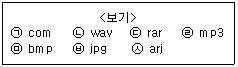
- (ㄱ), (ㅁ)
- ㉦, (ㄷ)
- (ㄷ), (ㄹ)
- (ㅁ), ㉥
(정답률: 68%)
38. 한글 Windows 98의 탐색기에서 [보기]-[자세히] 메뉴로 파일에 대한 자세한 정보를 얻을 수 있다. 다음 중 이때 제공되는 정보가 아닌 것은?
- 이름
- 종류
- 크기
- 작성자
(정답률: 70%)
39. 한글 Windows 98의 폴더창에서 임의의 파일을 실수로 삭제하였다. 삭제 할 파일을 복구하기 위해서 작업 취소를 하는 방법으로 옳지 않은 것은?
- 폴더창의 도구모음에서
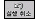
(실행취소)를 누른다. - 폴더창의 편집 메뉴에서 실행취소를 선택한다.
- 폴더창 내의 바로가기 메뉴에서 붙여넣기를 선택한다.
- [Ctrl] + [Z]키를 누른다.
(정답률: 59%)
40. 다음 중 한글 Windows 98의 프린터 폴더에서 수행할 수 있는 작업이 아닌 것은?
- 새로운 프린터 드라이버 설치
- 사용하지 않는 프린터 드라이버의 삭제
- 기본 프린터 설정
- 기본 팩스 설정
(정답률: 54%)